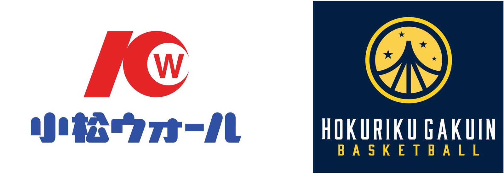

地元企業が支える全国区の挑戦 —— 小松ウオール、北陸学院高校 男子バスケットボール部のメインパートナーに就任
石川県小松市に本社を置く小松ウオール工業株式会社は、同県を拠点とする北陸学院高等学校 男子バスケットボール部のメインパートナーに就任したと8月27日発表した。

ユニフォームへのロゴ掲出や遠征支援など、環境面からバックアップ
本パートナーシップを通じ、小松ウオールは8月22日に開幕した「U18日清食品トップリーグ2026 Div.1」に出場する同部を環境面から支援する。具体的には、選手が着用する公式戦用ユニフォームや練習着（ウォームアップウェア）への「小松ウオール」コーポレートロゴの掲出、同部が活動する体育館へのフラッグ掲出、さらに全国大会やトップリーグでの連戦を戦い抜くための部活動・遠征などの環境支援を行うとしている。
地元プロチームへの協賛実績、全国トップレベルの高校との親和性
小松ウオールは1968年の創業以来、石川県小松市に本社および生産拠点を構え、地元プロバスケットボールチーム「金沢サムライズ」への協賛などを通じて地域スポーツを支援してきた。石川県内で「全国常連」と呼べるチームが限られる中、北陸学院高校 男子バスケットボール部は近年、全国トップレベルの成績を安定して残しているという。同社の加納慎也代表取締役社長は「全国有数の強豪チームである、北陸学院高校 男子バスケットボール部のメインパートナーとなれることを大変嬉しく思います」とコメントしている。
北陸学院高校バスケ部、インターハイ全国ベスト8などの実績
北陸学院高等学校 男子バスケットボール部は石川県金沢市を拠点とする強豪チームで、留学生プレーヤーも加わりながら新たなプレースタイルを取り入れているという。組織的なディフェンスとハードワークを武器に、インターハイでの全国ベスト8進出やブロックリーグでの全勝優勝といった成績を残している。同部の濱屋史篤監督は「開幕した『U18日清食品トップリーグ2026 Div.1』においても、今回のパートナーシップを大きな力に変え、支えてくださる皆様への感謝をコートでの結果で恩返しできるよう、これからも選手・スタッフ一丸となって全力で戦い抜きます」と述べている。
出典: 小松ウオール工業株式会社プレスリリース「小松ウオールが北陸学院高校 男子バスケットボール部のメインパートナーに就任！」（PR TIMES・2026年8月27日）
https://prtimes.jp/main/html/rd/p/000000020.000168535.html